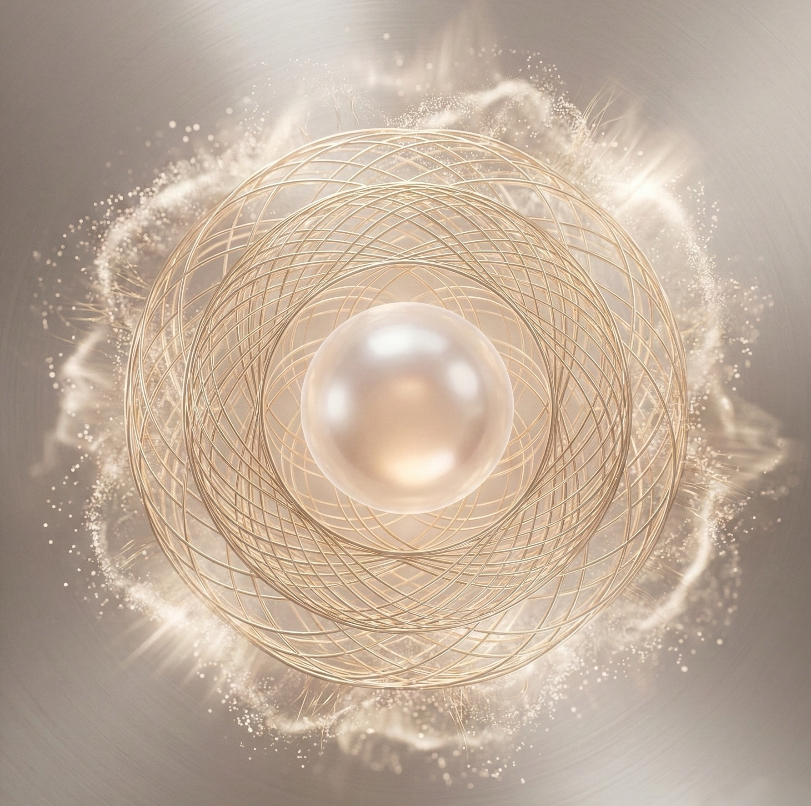
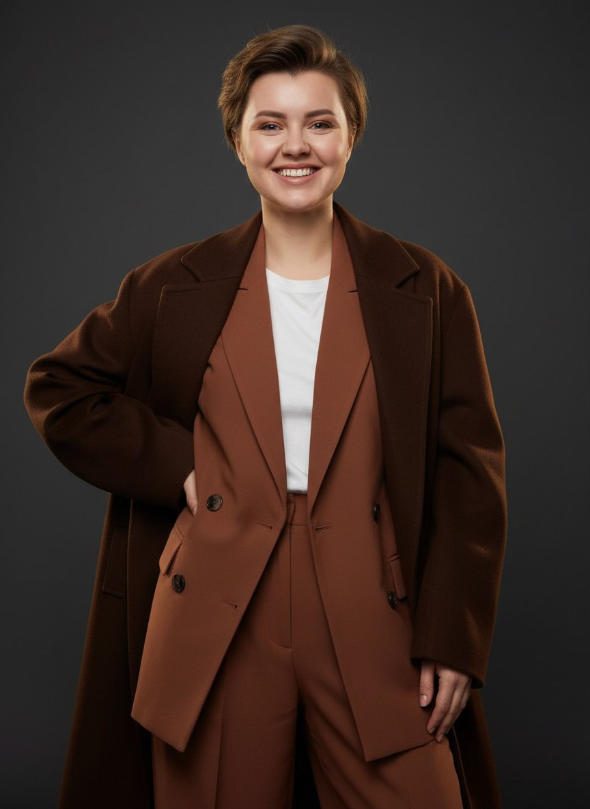

Сертификаты и дипломы
Моя работа опирается на фундаментальные академические знания и стандарты
Это не курс в записи, не сообщество. Это сервис, разработанный по авторской методологии, которая проведёт вас от первого понимания себя — через стратегию — к конкретным реализуемым целям, сопровождая каждый день. С ИИ-помощником, который готов помогать 24/7 и обучен по методологии ЯСД. С удобным приложением у вас в телефоне и на ПК.

Потому что между «знать» и «жить по-другому» — пропасть, через которую никто не помог перейти - сократить ее.
Вы читали книги, проходили курсы, слушали подкасты. Понимания много. Вопрос действий. Почему-то появляется много мыслей и событий, почему не в приоритете то, что так давно хотели сделать.
Через две недели после любого обучения эмоция уходит. Остаёшься один на один с задачами, без навигации и без поддержки в момент, когда труднее всего.
Идеи — в заметках. Цели — в голове. Планы — в трёх разных блокнотах. Единого места, где мы видим себя и свой путь целиком, — нет.
Никто не помог тебе разобраться в себе достаточно глубоко, чтобы путь стал очевидным, не было сомнений и страхов (ладно, хотя бы научиться с ним справляться без последствий).
Без зеркала, без обратной связи, без того, кто удержит фокус — очень легко обесценить свои шаги и бросить.
ЯСД — для любого человека, который строит свою жизнь осознанно. Важно — есть ли у вас желание понять себя и двигаться на "новом топливе" - осознанного трека к целям.
Таланты есть. Желания есть. Но нет ясности: что из этого главное, что моё, а что навязано — и куда со всем этим идти.
Вы заняты. Постоянно что-то делаете. Но в конце дня нет ощущения, что это приближает к тому, что важно. Энергия есть — вектора нет.
Цели вроде бы есть. Но они не заряжают. Потому что ещё не найдено то самое — глубокое «зачем», которое держит в движении даже когда трудно.
Снаружи всё выглядит хорошо. Внутри — усталость, ощущение, что живёшь чужой жизнью или застрял на плато. Хочется переосмыслить и выстроить заново — по-настоящему своё.
Прежде чем двигаться — нужно понять, откуда и кто именно движется. Мы вытаскиваем на поверхность всё: ценности, таланты, желания, страхи, роли, которые ты играешь. Отделяем ваше истинное от чужого. Это не тест и не анкета — это живая работа с собой внутри сервиса, шаг за шагом.
Глубокая самодиагностика. Работа с ценностями и смыслами. Формирование вашей личной «базы себя» — структурированного портрета, на который можно опираться при любом решении.
Вы видите себя ясно. Знаете свою личную навигацию: кто вы, что вам важно и почему вы делаете то, что делаете. Исчезает ощущение «я не знаю, чего хочу».
Из ясного понимания себя рождается честная стратегия. Не «хотелки» и не планы ради планов — а реальный маршрут, построенный под вас: ваши ресурсы, ваш темп, ваши приоритеты. С метриками и без иллюзий.
Проектирование вашей дорожной карты. Расстановка приоритетов — что делать сейчас, а что подождёт. Декомпозиция больших целей до конкретных шагов.
У вас есть план, которому ты вы полностью доверяете. Потому что вы сами его построил — из своих внутренних ориентиров, а не из чужого шаблона.
Самый честный этап. Здесь встречаются план и реальная жизнь. Сервис становится вашим ежедневным инструментом: собранный календарь, трекер, дневник, аналитика, напоминания. И работа с тем, что мешает — сопротивлениями, прокрастинацией, потерей фокуса.
Удобный календарь на каждый день. Трекер состояний и задач. Аналитика качества времени. Дневник рефлексии, Геймификация: уровни, опыт, ачивки за реальные действия. ИИ-помощник с моей методологией. И многое другое...
Вы не просто знаете свой путь — вы по нему идете. Каждый день. Накапливаете свое везение и создаете постепенно реальность ваших мечт.

Часов практики
Я работаю на стыке двух миров: глубокого понимания человека и конкретной системной логики. Мне важно, чтобы вы не просто «поняли себя» — а смогли это приземлить: в стратегию, в действия, в результат, который ощущается как свой.
9+ лет в бизнесе: создавала продукты, управляла командами, запускала проекты. Я мыслю системно и знаю, как устроена реализация изнутри — не в теории.
Дипломированный бизнес-психолог и сертифицированный коуч по стандартам ICF (level 2 PCC). Понимаю, как психика мешает росту — и как с этим работать без давления, а из бережного отношения к себе.
Диплом Директора по стратегическому развитию бизнеса и команд позволяет работать с executive и бизнес-запросами как собственников, так и руководителей и экспертов — для достижения целей нового уровня через расшитие ограничивающих убеждений и трансформацию мышления.
Сотни историй разных людей — предпринимателей, экспертов, специалистов и тех, кто искал себя. Методология ЯСД выросла из этого опыта, а не из теории и книг с полок библиотек.
Моя работа опирается на фундаментальные академические знания и стандарты
Это не курс, который смотришь фоном. Это живое пространство, которое адаптируется под вас и сопровождает вас каждый день — от первого «кто я» до последнего «я это делаю и у меня получается!»
Обзор сервиса
Посмотрите, как это работает изнутри
Понятный и прозрачный путь работы для достижения результата
Только суть и "мясо". Без воды, исключительно проверенные инструменты, которые работают в бизнесе каждый день.
Получите готовые шаблоны, таблицы и чек-листы для немедленного самостоятельного внедрения в ваш проект.
Окружение таких же заряженных экспертов и предпринимателей для взаимного опыления, поддержки и помощи.
Проверка заданий, регулярные разборы полетов и обратная связь от меня и команды сильных наставников.
Доступ к системе «Я эксперт. Системность. Действие», закрытому комьюнити, проверке заданий и базе материалов. Сдвиг на новый масштаб с ментором.
Прямо сейчас проект находится на стадии разработки. Бронируйте первыми.
Перейти в канал предзаписиТри этапа. Один непрерывный путь. От «кто я» — до «я это делаю каждый день».
Распаковка себя. База, на которой всё строится. Ты узнаёшь, кто ты, что тебе важно и почему ты делаешь то, что делаешь.
Твой путь — в конкретику. Не мечты, а карта. Реальный маршрут под тебя: твои ресурсы, твой темп, твои приоритеты.
Каждый день — с навигатором. Без срывов и самосаботажа. Ты не просто знаешь свой путь — ты по нему идёшь.
ЯСД — это новый формат на стыке EdTech и IT-продукта. Отвечаем на главные вопросы.
Здесь собрана информация моих сессий с клиентами, как мы работали в рамках встреч. Каждый упакован последовательно, чтобы проявить стратегию формирования результатов.
Здесь собраны бесплатные материалы: статьи и практики для вас, чтобы вы могли уже сегодня начать свой путь к самому себе